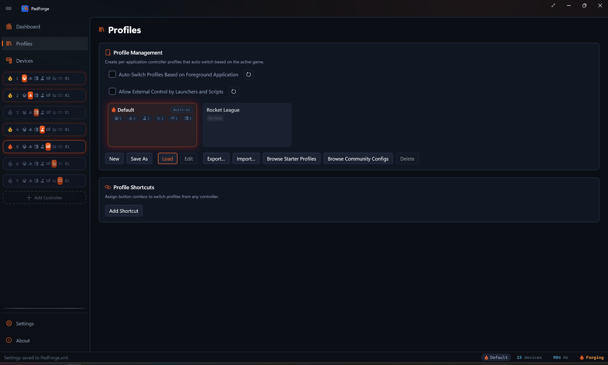
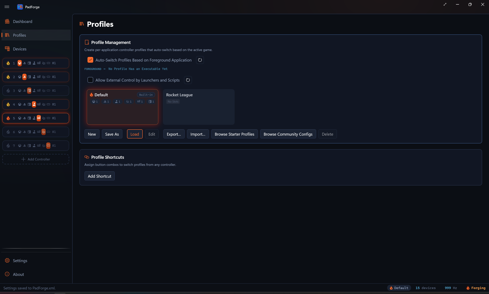

Profiles¶
A full snapshot of your PadForge setup. Switch profiles and the slots, mappings, deadzones, macros, and feedback settings all change at once.

Profiles can switch on their own when a game gains focus, or from a controller-button combo you record.
What a profile holds¶
| Setting | What is captured |
|---|---|
| Virtual controller topology | Created slots, enabled slots, and the type of each slot (Xbox, PlayStation, Nintendo, Extended, MIDI, Keyboard + Mouse, VR). |
| Button and axis mappings | Every per-device mapping for every slot. See Button and Axis Mappings. |
| Deadzones | Per-axis Stick Deadzones and per-trigger Trigger Deadzones. |
| SOCD cleaning | Per-slot Simultaneous Opposite Cardinal Directions (SOCD) mode and button pairs, applied to the slot's final combined output. |
| Force feedback | Per-slot Force Feedback settings. |
| Bass Shakers | Per-slot Rumble to Audio routing. Output device, gain, speaker placement, and the tone tuning for each of the four rumble voices. |
| Impulse triggers | Per-slot Impulse Triggers gain, swap, Constant Trigger Force, and Audio Bass Trigger Rumble. |
| Adaptive triggers | DualSense Adaptive Triggers modes and curves. |
| Lighting | Lighting modes for DualSense and DualShock 4 lightbars, plus Guide Button LED brightness for Xbox One and later controllers, Steam Controllers, Switch Pro Controllers, and right Joy-Cons. |
| Gyro | Per-pad-per-slot Gyro tuning. Reference frame, sensitivity, smoothing, real-world calibration, Aim Engage button. |
| Flick Stick | Per-pad-per-slot Flick Stick tuning. Dots per 360°, Flick Time, Flick Threshold, Snap Angle, Snap Strength, Front Angle Deadzone, Sweep Smoothing. |
| Macros | All Macros. Triggers, actions, repeat modes. |
| Menus | Per-slot radial and touch Menus: cells, host input, fire mode, and overlay placement. |
| Touchpad outputs and gestures | Per-slot Touchpad toggles (Stick / D-Pad, Mouse, absolute pointer, swipe haptics, gesture detection) plus custom shape templates recorded with the recorder dialog. Different games can carry different gesture catalogs. |
| Extended slot shape | Per-slot Sticks, Triggers, POVs, and Buttons counts for Extended (HIDMaestro) slots. |
| Polling rate override | Optional. A profile can carry its own polling rate, set in the profile dialog. While that profile is active it replaces the global Settings value. See Polling rate override. |
A profile switch changes all of these at once. Physical controllers stay connected. Only the virtual side changes.
The Default profile¶
Default loads at startup and runs any time no other profile matches the foreground app. You cannot delete or rename it.
Set Default to your general layout, like a standard Xbox pad for platformers. Make game-specific profiles only where you want something different.
Important. Changes you make on any page (Dashboard, Mappings, Macros, etc.) save into the profile that is loaded right now.
Auto-switch on app focus¶
PadForge watches the foreground window at about 30 Hz. When the app in front matches a profile, that profile loads.
- Add one or more game executables to a profile.
- The matching app gains focus. PadForge loads the profile.
- An unmatched app gains focus (desktop, browser, etc.). PadForge goes back to Default.
The outgoing profile's state saves before the new one loads. The virtual controllers stay connected through the switch.
Turn it on from the Profiles page. Check Auto-Switch Profiles Based on Foreground Application.
Live foreground readout¶
With auto-switch on, a FOREGROUND line appears under the checkbox. It shows the executable name of whatever app is in front right now. The name lights up with a flame and ember color while that executable matches a profile, so you can confirm matching works without launching the game blind.
If auto-switch is on but no profile carries an executable rule yet, the line reads No Profile Has an Executable Yet. Nothing can auto-switch until you add an executable to a profile.

Make a profile¶
- Open the Profiles page in the sidebar.
- Click New for an empty profile, or Save As to clone the current setup.
- Type a name (Forza, Elden Ring, Flight Sim, etc.).
- Click Browse... and pick the game's executable. Multi-select works.
The Save As path¶
The fastest way to make a per-game profile:
- Set PadForge up the way you want for one game. Mappings, deadzones, macros, slots.
- Open Profiles and click Save As.
- Name it after the game.
- Click Browse... and pick the game's executable.
The full working setup is now a saved profile and is ready to auto-switch.
Executable matching¶
Each profile can list one or more executables. When the foreground process matches one of them, the profile loads.
- Added through the Browse... dialog. Stored as full paths.
- Multiple executables per profile. One profile can cover several launchers or game versions.
- Case-insensitive.
EldenRing.exematcheseldenring.exe. - Click Remove to drop an executable from the list.
Profile cards¶
The profile grid shows one card per profile. Each card carries:
- The profile name.
- An icon pulled from the game's executable, when the stored path still resolves.
- Up to two executable names, then a
+Nmarker for the rest. The full list rides the tooltip. - A strip of slot-count badges, one per slot type.
- An Auto-switch rule chip, shown when auto-switch is on and the profile has at least one executable.
- A Built-in chip on the Default card.
The active profile's card carries a lit flame and an ember-tinted edge, so you can tell at a glance which one is driving your controllers.
Slot-count badges¶
| Badge | Counts |
|---|---|
| Xbox | Xbox slots in the profile. |
| PlayStation | PlayStation slots. |
| Extended | Extended (HIDMaestro) slots. |
| MIDI | MIDI slots. |
| KB+M | Keyboard+Mouse slots. |
| Nintendo | Nintendo slots. |
| VR | VR slots. |
A badge hides when its count is zero. The strip gives you a quick read of the profile's shape without loading it.
Manage profiles¶
| Action | What it does |
|---|---|
| New | Empty profile with no slots. |
| Save As | Clones the current setup into a new profile. |
| Load | Apply the selected profile. Double-click also loads. |
| Edit | Rename and edit the executable list. |
| Export… | Write the selected profile to a shareable .pfprofile file. |
| Import… | Read a .pfprofile file back in. |
| Browse Starter Profiles | Open the starter gallery and save a ready-made genre archetype as a new profile. See Start from a starter profile. |
| Browse Community Configs | Open the Steam Workshop browser and import a community-made Steam Input config as a new profile. See Steam Workshop Config Import. |
| Delete | Remove the selected profile. Default cannot be deleted. |
Polling rate override¶
A profile can carry its own polling rate. Open New, Save As, or Edit and pick a value from the Polling Rate dropdown in the profile dialog.
| Choice | Interval |
|---|---|
| Default (Global Setting) | Follows the Polling Interval value on the Settings page. |
| 1000 Hz (1 ms) | 1 ms |
| 500 Hz (2 ms) | 2 ms |
| 250 Hz (4 ms) | 4 ms |
| 125 Hz (8 ms) | 8 ms |
| 62.5 Hz (16 ms) | 16 ms |
While a profile that carries an override is active, the override sets the loop interval and the global Settings value does nothing. Every other profile, Default included, falls back to the global value.
The Settings page names the profile in charge under the knob, in ember text: Overridden while profile “Racing” is active: 8 ms. The line is hidden while the global value rules.
The poll loop stays global and nothing restarts on a switch. The loop recomputes its target every cycle, so a new rate takes effect on the next tick.
Share and back up profiles¶
Export writes a profile to a .pfprofile file. That file is one archive holding the profile plus any sound packages its macros use, so a profile with custom macro sounds travels complete. Send it to someone else, or keep it as a backup.
- Select a profile in the grid.
- Click Export….
- Pick a location and save. The file is named after the profile.
You can export the Default profile too. It writes a snapshot of your current settings.
Import reads a .pfprofile back in.
- Click Import….
- Pick the
.pfprofilefile. - The profile joins the grid, and any bundled sound packages install alongside it. If the name already exists, PadForge adds a number.
Import does not activate the profile. Load it, or let auto-switch pick it up.
Drag and drop¶
Drag a .pfprofile file from Explorer and drop it onto the profile grid to import it. A dashed Drop to Import Profile overlay appears while a valid file is over the grid.
Community configs from the Steam Workshop¶
Browse Community Configs imports a community-made Steam Input config from the Steam Workshop as a new profile. The full flow (opt-in, browsing, the translation manifest) lives on Steam Workshop Config Import. What matters here:
- An imported profile carries only the pads the config actually drives. A config with both controller and keyboard/mouse bindings gets an Xbox pad and a Keyboard + Mouse pad, a pure keyboard/mouse layout gets a single Keyboard + Mouse pad, and a plain controller passthrough gets a single Xbox pad. Extra action sets arrive as Shift Layers, cursor warps and autofire as Macros on the Xbox pad.
- It ships with no device assignments and no executable. Assign your controller to each created pad, then select the profile, click Edit, and add the game's executable so auto-switch can pick it up.
- Imports always create a new profile. A taken name gets a number appended.
- The profile remembers which Workshop config it came from, so Check Imported Profiles for Updates on the Settings page can tell you when the config changed upstream. A Save As fork counts as your own work and drops that link.
Controller shortcuts¶
Record a controller button combo and have it switch profiles, toggle the window, or turn every virtual controller on or off. You can do this without a keyboard.
Shortcut modes¶
| Mode | What it does |
|---|---|
| Next Profile | Move forward one step in the profile list. |
| Previous Profile | Move backward one step. |
| Specific Profile | Jump straight to a named profile. |
| Toggle Window | Minimize PadForge when it is in front. Restore and raise it when it is minimized, hidden, or in the background. Honors the Minimize to System Tray setting and fullscreen. |
| Toggle Virtual Controllers Disabled | Turn every created controller on or off with one combo. If any slot is enabled, the combo disables all of them. If every slot is already disabled, the combo enables them all. A bottom-of-screen flyout confirms the new state. |
Add a shortcut¶
- Open the Profiles page. Click Add Shortcut under the Profile Shortcuts card.
- Pick a Mode from the dropdown.
- For Specific Profile, pick the target profile from the Profile dropdown.
- Pick a Device. One specific controller, or Any Connected Device to fire from any pad.
- Click Record (the record icon) and press your combo within 5 seconds.
Recording details¶
- Buttons. Press one or more at the same time to make a combo.
- Axes. Triggers and sticks count as inputs, with direction (left-stick-left can be Previous, left-stick-right can be Next).
- Cross-device combos. Buttons from different controllers can combine into one shortcut.
External control from launchers and scripts¶
A launcher, script, or automation tool can activate and deactivate profiles from outside PadForge. Playnite and LaunchBox are the two everyone asks about, and both work the same way: run one command before the game starts and another after it closes.
Turn it on from the Profiles page. Check Allow External Control by
Launchers and Scripts. PadForge then serves a local named pipe,
PadForge.Control, while the engine is running. Local machine only, off by
default.
The commands¶
One UTF-8 line in, one line out, one command per connection. Verbs and replies are fixed ASCII and never translate.
| Command | What it does | Reply |
|---|---|---|
activate <name> |
Loads the profile with that name (or its id) and holds it. Name matching ignores case. | ok <name> |
deactivate |
Releases the hold and goes back to Default. | ok default |
query |
Reports the active profile and whether it is held. | ok <name> pinned or ok <name> unpinned. The name reads default when no profile is active. |
Four replies cover the failures:
| Reply | Cause |
|---|---|
error unknown-profile |
No profile matches that name or id. |
error unknown-command |
The verb is not activate, deactivate, or query. |
error empty |
The line was blank, or activate arrived with no name. |
error internal |
The command threw. |
PadForge answers every connection, a blank line included, so a client waiting on a reply never hangs.
The hold¶
An externally activated profile is held. Auto-switch on app focus cannot replace it while the hold lasts, so the same game can run under different profiles depending on how it was launched. The hold is never written to disk. It ends when:
- the script sends
deactivate, - you switch profiles yourself, by the status-bar switcher, the Load or Revert to Default button on this page, or a controller shortcut,
- you uncheck Allow External Control by Launchers and Scripts,
- the engine stops, or PadForge restarts.
A deactivate and an unchecked box both tell the foreground monitor to re-read
the window in front, so a still-focused game picks its own rule back up on the
next check.
PowerShell one-liner¶
Everything below builds on this line. It runs from a normal, unelevated process, with no UAC prompt:
$p = New-Object IO.Pipes.NamedPipeClientStream '.', 'PadForge.Control', InOut; $p.Connect(2000); $w = New-Object IO.StreamWriter $p; $w.WriteLine('activate Racing'); $w.Flush(); $p.Close()
Swap activate Racing for deactivate in the after-close command. A script that
wants to check for error unknown-profile reads one line from the same pipe with
a StreamReader before closing it.
Playnite¶
In a game's settings, add two script actions (or use a plugin):
- Before starting a game: the one-liner with
activate <profile>. - After exiting a game: the one-liner with
deactivate.
Two Playnite entries for the same game can activate two different profiles, which
is exactly the "Play with Controller" versus "Play with Keyboard & Mouse" split.
Plugin authors can skip PowerShell and open the pipe directly with
NamedPipeClientStream, write one UTF-8 line ending in a newline, and read one
line back.
LaunchBox¶
Add two Additional Applications to the game:
- Application path:
powershell.exe. Parameters:-WindowStyle Hidden -Command "<the one-liner with activate>". Check Automatically run before main application. - The same with
deactivate, checking Automatically run after main application.
Command-line form¶
PadForge.exe --profile "Name" and PadForge.exe --default-profile map onto
activate and deactivate. Which path they take depends on whether PadForge is
already up.
| State | What happens |
|---|---|
| Already running | The second instance forwards the command over the pipe, prints the reply, and exits with no window. This needs Allow External Control by Launchers and Scripts checked. With the pipe off it prints error not-connected and changes nothing. |
| Not running | PadForge starts and applies the profile once the engine is up, so a launcher can start it straight into a profile. This one is an in-process apply and works with the pipe off. |
PadForge always runs elevated, so this form pops a UAC prompt when called from a normal process. Use the pipe one-liner from launchers and keep the exe form for elevated scripts and Task Scheduler jobs.
Switch flyout¶
A small flyout slides up from the taskbar when a controller shortcut switches the profile.
| Stage | What shows |
|---|---|
| Profile name | The new profile's name. Two seconds. |
| Initializing | Flashing icon while the virtual controllers start up. |
| Active | Accent-colored checkmark. The controllers are ready. |
| Offline warning | After the Active stage, if one or more controllers have no online physical devices, a warning icon and "One or more controllers offline" message show for another two seconds. |
The flyout matches the Windows 11 volume OSD styling and follows your light or dark theme.
An auto-switch on app focus does not raise this flyout. The active profile name updates in the status bar and on the pad page, and glows for a moment.
The Toggle Virtual Controllers Disabled shortcut shows its own flyout (enabled or disabled) instead of the profile flyout.
The Dashboard's Overlays card carries a Profile Switch Overlay toggle, on by default. Turn it off and shortcuts still switch profiles, just without the flyout.
Examples¶
| Scenario | Setup |
|---|---|
| Racing game with custom deadzones | Make a "Forza" profile with wider trigger deadzones and a steeper stick curve. Add ForzaHorizon5.exe. It loads on launch and reverts on Alt+Tab. |
| Flight sim on Extended (HIDMaestro) | Make an "MSFS" profile that uses an Extended slot instead of Xbox. Map axes to flight-stick axes. Add FlightSimulator.exe. Other games keep the Default Xbox profile. |
| Switch emulator with a Nintendo pad | Make a profile that uses a Nintendo slot instead of Xbox. The emulator sees a Switch Pro Controller and shows Nintendo button prompts. Add the emulator's executable. |
| Several emulators, one profile | Make an "Emulators" profile and add Dolphin.exe, Cemu.exe, and Ryujinx.exe. All three load the same setup. |
| Macros for one game only | Make a profile with D-pad-to-keyboard macros for an MMO. Add the MMO executable. Default has no macros, so they only run when the MMO is in front. |
| Quick on/off from the couch | Bind Toggle Virtual Controllers Disabled to LS + RS. Press it to make every virtual pad go away (for keyboard play), press again to bring them all back. |
Tips¶
- Set up Default first. It is your everyday layout.
- Save As from a working setup is faster than building a profile from scratch.
- Test auto-switch by Alt+Tabbing between your game and another app. Watch the FOREGROUND readout and the active profile name.
- Macros save per profile. Per-game macros only run when their game is in front.
- Physical device connections stay open across switches. Only the virtual side changes.
- Export profiles to
.pfprofilefiles to back them up or share them. - Controller shortcuts beat Alt+Tabbing for mid-game profile changes.
Limitations¶
- Auto-switch reads the foreground window. Games launched from a launcher that stays in front (some bootstrappers) may need the launcher's executable in the list too.
- Match is by full file path. A game installed in two places needs both paths added.
- Toggle Virtual Controllers Disabled only acts on slots you have created. It does not create or remove slots.
Related pages¶
- Dashboard: shows the currently active profile.
- Controller Slots: a profile switch updates every slot in the configuration.
- Devices: physical device connections stay open across switches.
- Settings: Check Imported Profiles for Updates for profiles imported from the Steam Workshop.
- Button and Axis Mappings: stored per profile.
- Macros: stored per profile.
- Steam Workshop Config Import: import community configs as profiles.
- External Control Internals: the pipe, its security descriptor, and the held-profile state machine.
Last updated for PadForge 4.4.0.